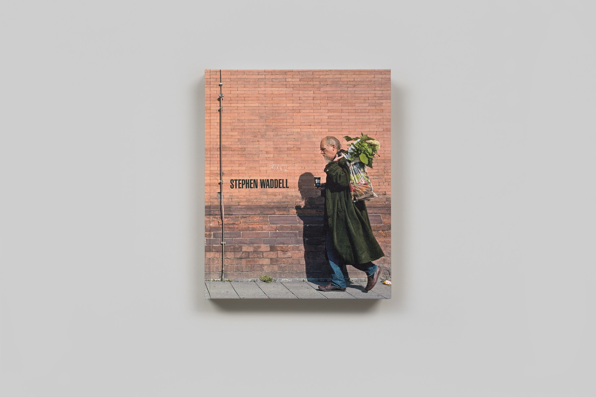
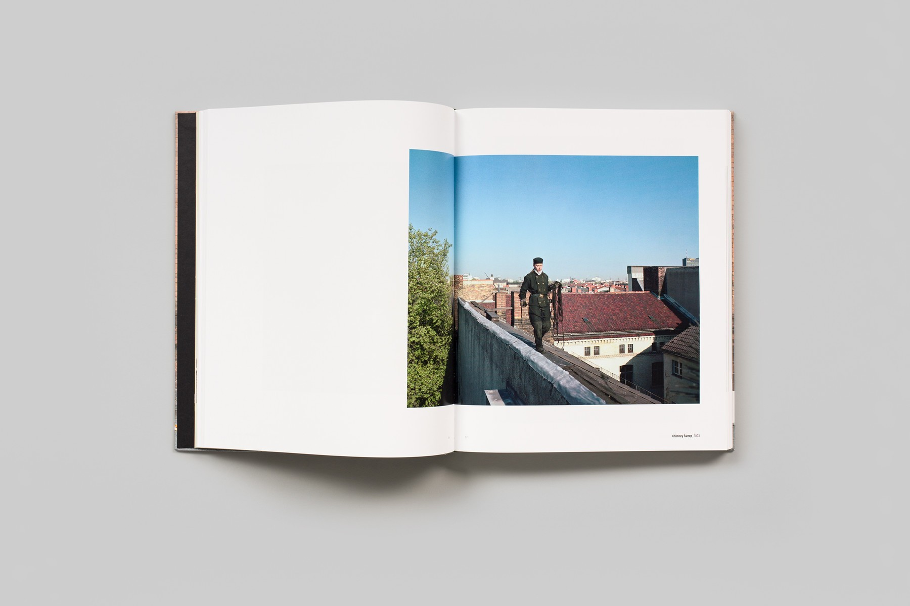
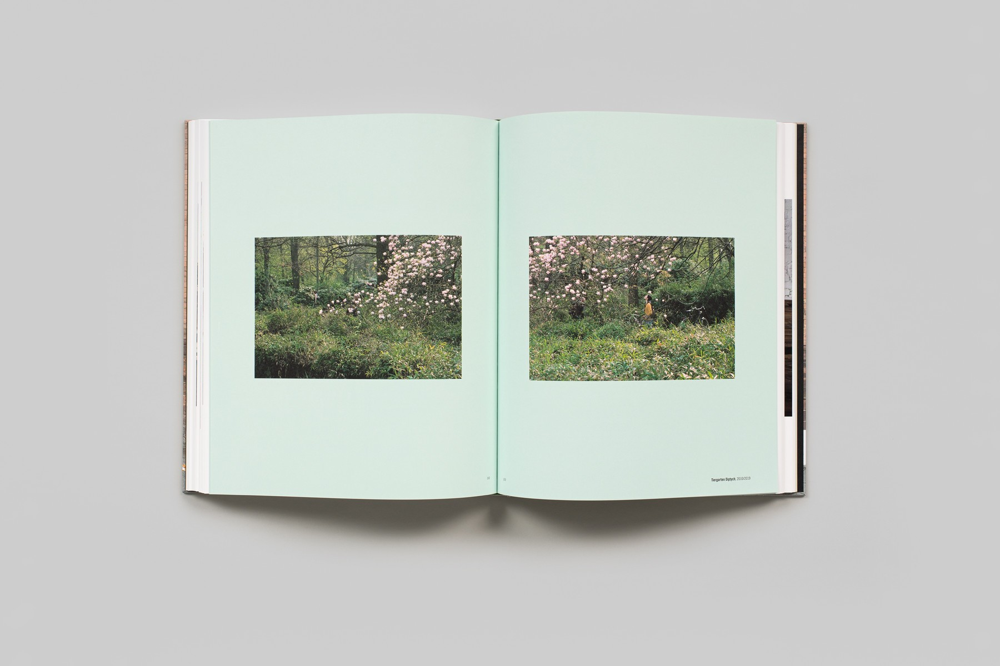

2020
Hardback
228 pages, 12" x 10"
Publisher: Steidl
Introduction: Helga Pakasaar.
Essay: "A Walker in the City" by Brian Sholis.
Photography: Stephen Waddell.
Images: Brian Sholis
"Stephen Waddell creates photographs that transcend the typical treatment of the medium.
Though his scenes are often un-staged, captured spontaneously, and seem to present impromptu
subject matter, Waddell’s framing, composition, colour, and lighting are far more akin to a
meticulous historical paintings than off-the-cuff photographs. His discerning eye, precise
captures, and references to our pictorial history are exactly what the artist is known for.""
-Stephen Waddell video interview by GalleriesWest
Purchase the book here.


